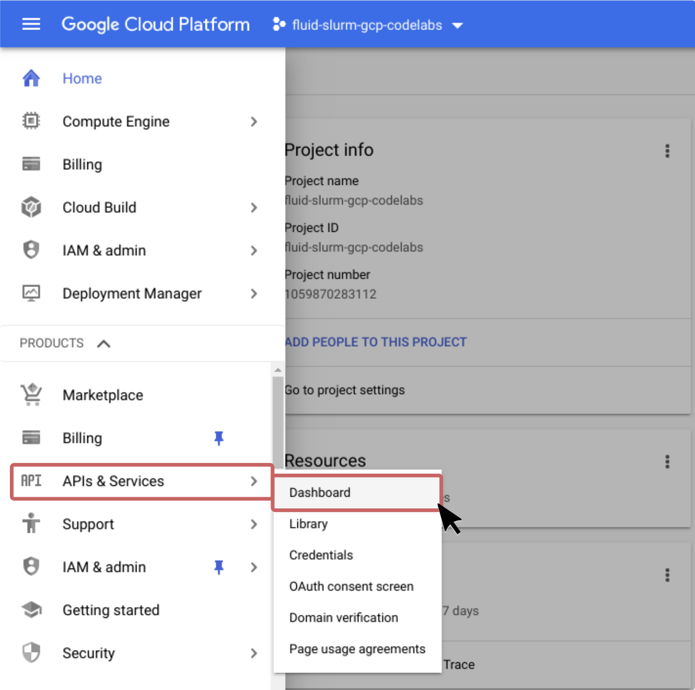
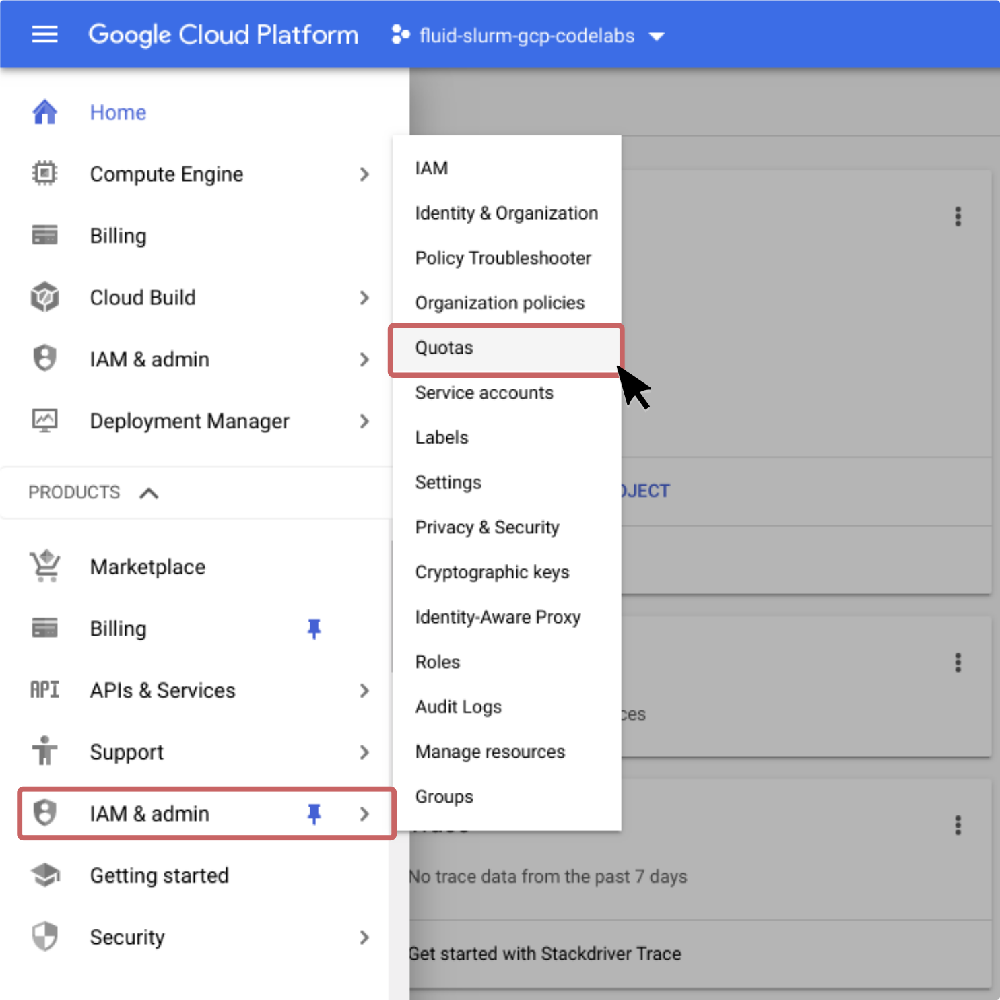
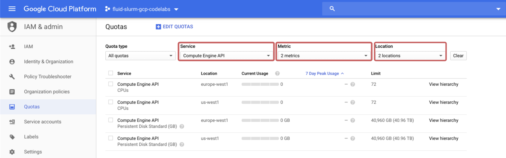

Last Updated: 2020-07-27
Use cases for Fluid Numerics' HPC Cluster on Google Cloud Platform
Organizations are beginning to investigate how to leverage cloud computing resources to meet highly variable high performance computing needs that often exceed the capacity of on-premise compute resources.
Google Cloud Platform (GCP) offers burstable access to a staggering amount of compute resources worldwide that includes CPUs, GPUs, and TPUs. GCP also offers flexible custom system configurations, where you can set a desired core-to-memory ratio for each compute instance. Additionally, GCP provides access to a range of data storage solutions that can attach to compute instances, including HDD and SSD persistent disks, high bandwidth local SSDs, NFS file-systems, and object storage. The partner ecosystem on GCP has also brought Lustre file-systems to the cloud.
Fluid Numerics has developed a globally scalable and highly customizable HPC cluster on Google Cloud Platform. Fluid-Slurm-GCP is built around the Slurm job scheduler and Google Cloud Platform engineering components. With this deployment, you can easily take advantage of compute resources across Google's data-centers worldwide, while maintaining a familiar HPC environment for you and your team. The fluid-slurm-gcp cluster can be used as a cloud-native or federated solution that provides cloud-bursting capabilities from your on-premise systems.
Further, with backgrounds in academia and government research, Fluid Numerics understands the requirements for expensing costs for government funded research. We have designed the fluid-slurm-gcp system to permit granular billing breakdowns and controls through cost management platforms like Orbitera.
Infrastructure
fluid-slurm-gcp provides a design on cloud resources that is similar in look-and-feel to on-premise HPC infrastructure. The deployment has a number of static login nodes, where users access the cluster, and a controller instance that hosts the Slurm job scheduler. Compute nodes are either static or ephemeral.
Static compute nodes persist as long as the deployment is active and remain ready to receive workloads from Slurm. Ephemeral compute nodes are created on-the-fly, as needed, to meet variable compute capacity demands. When ephemeral nodes become idle, Slurm automatically removes the compute resources from GCP so that you pay only for compute cycles as needed. To develop a better understanding of the costs on GCP for fluid-slurm-gcp, check out our pricing documentation.
Software tools
Cluster-Services
Cluster-Services, a command-line tool developed by Fluid Numerics to manage compute partitions and available machines, Slurm accounting configurations and compute partition access for users, and network attached storage mounts. All of the images for fluid-slurm-gcp come with this command-line tool to make managing your globally scalable HPC cluster simpler and cost-effective.
Spack
Spack is becoming a well accepted package manager for HPC applications. Spack supports a large number of HPC packages, while managing all of the package dependencies for you. Spack offers a straightforward process to integrate your HPC software into the Spack ecosystem so that you can share your code with others more easily. To get started with using Spack for HPC package management, check out the Spack package installation tutorial.
Singularity
HPC developers are beginning to develop strategies for creating portable HPC applications. Containerization has proven to be an excellent solution for the portability problem by allowing developers to package development environments alongside applications and "shipping" the containers to production systems. We opt to offer Singularity as our containerization platform of choice.
Singularity is a container platform that was developed specifically for HPC uses. To run HPC container images, users do not require privilege escalation. Further, Singularity works naturally with MPI applications that leverage resources across multiple compute nodes and even has flags that allow you to leverage GPU and multi-GPU platforms.
What you will build
In this codelab, you are going to create a cloud-native HPC cluster on Google Cloud Platform and configure high-availability (multi-zone) and globally-scalable (multi-region) compute partitions.
What you will learn
- How to configure Identity and Access Management (IAM) policies for operating an HPC cluster on Google Cloud Platform
- How to deploy a cloud-native HPC cluster with the Slurm job scheduler
- How to set up basic Slurm accounting with Fluid Numerics' cluster-services
- How to submit a job step with Slurm
What you will need
- GSuite, Cloud Identity, or Gmail Account
- Google Cloud Platform Project with Billing enabled
- Project owner role on your GCP Project
- Sufficient Compute Engine Quota in two GCP regions
- Basic Command-Line Linux Experience
Project Setup
This codelab assumes that you already have a GSuite, Cloud Identity, or Gmail account. To get started, sign in to console.cloud.google.com using your GSuite, Cloud Identity, or Gmail account.
In the project selection dropdown menu, select the project you want to use to create your HPC cluster. In the products and services menu, navigate to APIs & Services > Dashboard.

Click on + Enable APIs and Services. Search for "Compute Engine" and click on the Compute Engine API. Click Enable and wait for the Compute Engine API to be configured and setup.
Verify GCP Quota
For this demo, you will need the following minimum quota
- 12 vCPUs in us-west1 and europe-west1.
- 120 GB PD-Standard Disk in us-west1 and europe-west1

To verify and/or modify your quota, navigate to IAM & Admin > Quotas in the Products and Services menu. Use the following filters to display only CPU and PD-Standard disk quota in us-west1 and europe-west1
- In the Services dropdown menu, select only "Compute Engine API".
- In the Metrics dropdown menu, select "CPUs" and "Persistent Disk Standard (GB)"
- In the Location dropdown menu, select "europe-west1" and "us-west1"

Your default quota should be sufficient for this tutorial. In the event it is not, check the box next to "Service" and click "Edit Quotas". Follow the prompts in the info panel that appears on the right side of the screen. You may need to wait for Google's quota team to update your quota.
Set IAM Policies
In HPC, there are clear distinctions between system administrators and system users. System administrators generally have "root access" enabling them to manage and operate compute resources. System users are generally researchers, scientists, and application engineers that only need to leverage the resources to execute jobs.
On Google Cloud Platform, the OS Login API provisions POSIX user information from GSuite, Cloud Identity, and Gmail accounts. Additionally, OS Login integrates with GCP's Identity and Access Management (IAM) system to determine if users should be allowed to escalate privileges on Linux systems.
In this tutorial, we assume you are filling the system administrator and compute engine administrator roles. We will configure IAM policies to give you sufficient permissions to accomplish the following tasks
- Create/Delete Google Compute Engine (GCE) VM instances
- SSH into GCE VM instances
- Escalate privileges on GCE VM instances

To give yourself the necessary IAM roles to complete this tutorial
- Navigate to IAM & Admin > IAM in the Products and Services menu.
- Click "+Add" near the top of the page.
- Type in your GSuite account, Cloud Identity Account, or Gmail account under "Members"
- Add the following roles : Project Editor, Compute OS Admin Login, Service Account User
- Click Save
Now you have verified your quota and permissions and are ready to launch the Fluid-Slurm-GCP HPC cluster on Google Cloud Platform. In these next few steps, you will create your cluster.
- Open https://console.cloud.google.com/marketplace/details/fluid-cluster-ops/fluid-slurm-gcp in a new tab.
- Click "Launch"
- Set the following parameters, while leaving the others as their default.
Deployment name | codelab-demo |
Zone | us-west1-b |
Slurm Default Compute Partition. Partition Name | first-partition |
Slurm Default Compute Partition. Static node count | 0 |
Slurm Default Compute Partition. Max node count | 2 |
Slurm Default Compute Partition. Machine type | n1-standard-2 |
- Click "Deploy" and wait for the cluster to be created.
Congratulations! You have just created the a login node and controller on Google Cloud Platform. These instances can be used to spin-up ephemeral compute nodes to execute HPC workloads.
In this section, we will access the cluster's login node, verify mount and partition settings, add our account to the default Slurm account, and submit a simple job to verify that the cluster is working.
Verify your cluster has been properly set up
Now that your deployment has been launched, it is time to access the login node. You can do this by clicking the SSH button from the deployment-manager page. This will open up a browser window with an active terminal on the login node.
Once you have logged into the login node, let's make sure that /home, /apps, and /etc are mounted from the controller.
$ df -h
Filesystem Size Used Avail Use% Mounted on
devtmpfs 7.3G 0 7.3G 0% /dev
tmpfs 7.3G 0 7.3G 0% /dev/shm
tmpfs 7.3G 8.5M 7.3G 1% /run
tmpfs 7.3G 0 7.3G 0% /sys/fs/cgroup
/dev/sda1 20G 3.1G 17G 16% /
codelab-demo-controller:/apps 20G 5.2G 15G 26% /apps
codelab-demo-controller:/home 20G 5.2G 15G 26% /home
codelab-demo-controller:/etc/munge 20G 5.2G 15G 26% /etc/munge
tmpfs 1.5G 0 1.5G 0% /run/user/3001Now, let us make sure we have a partition named "first-partition".
$ sinfo
PARTITION AVAIL TIMELIMIT NODES STATE NODELIST
first-partition up infinite 2 idle~ first-partition-[0-1]Notice that the compute instances in the first-partition currently have the name prefix "first-partition". Use Slurm's "scontrol" command to verify the number of cores and amount of memory available for compute nodes.
$ scontrol show node=first-partition-0
NodeName=partition-1-0 CoresPerSocket=1
CPUAlloc=0 CPUTot=2 CPULoad=N/A
AvailableFeatures=(null)
ActiveFeatures=(null)
Gres=(null)
NodeAddr=first-partition-0 NodeHostName=first-partition-0 Port=0
RealMemory=7055 AllocMem=0 FreeMem=N/A Sockets=1 Boards=1
State=IDLE+CLOUD+POWER ThreadsPerCore=2 TmpDisk=0 Weight=1 Owner=N/A MCS_label=N/A
Partitions=partition-1
BootTime=None SlurmdStartTime=None
CfgTRES=cpu=2,mem=7055M,billing=2
AllocTRES=
CapWatts=n/a
CurrentWatts=0 AveWatts=0
ExtSensorsJoules=n/s ExtSensorsWatts=0 ExtSensorsTemp=n/sSubmit a test job
To submit a job on this cluster, your POSIX user information needs to be registered in Slurm's accounting system. cluster-services acts as a wrapper for Slurm's sacctmgr command-line interface and intermediates your cluster description in the cluster-configuration file. In this tutorial, we will cover adding users to a default Slurm account.
- Add yourself to Slurm's accounting, using the following command and replacing [USERNAME] with your username.
$ sudo su
[root]# cluster-services add user [USERNAME]The output of this command should look similar to :
Adding User(s)
joe
Associations =
U = joe A = default C = codelab-de
Non Default Settings- After you have added your account, exit from root.
[root]# exit
exit
$ - Submit a jobstep on one node that reports the compute node's hostname using the
sruncommand. Because this deployment does not set any of the partitions as a default compute partition, the--partitionflag must be specified.
$ srun -N1 --partition=first-partition hostname
first-partition-0
This action will cause a compute node to be created in GCP. It can take anywhere from 1-2 minutes for the instance to be created and the job to start.You should see the name of the first compute node in this partition as output to the screen (first-partition-0)
Congratulations! You have just run a (simple) job step on your cluster. Compute nodes can be spun down manually or they can be left for Slurm to spin-down automatically.
$ sudo su
[root]# scontrol update node=first-partition-0 state=power_down
[root]# exit
exit
$ In this codelab, you created a cloud-native HPC cluster and submitted a simple job step with the Slurm job scheduler on Google Cloud Platform.
What's next?
Learn how to configure a high availability compute partition (multi-zone)
Learn how to configure a globally scalable compute partition (multi-region)
Submit your feedback and request new codelabs using our feedback form
Further reading
Learn how to configure OS-Login to ssh to your cluster with 3rd party ssh tools
Learn how to manage POSIX user information with the directory API